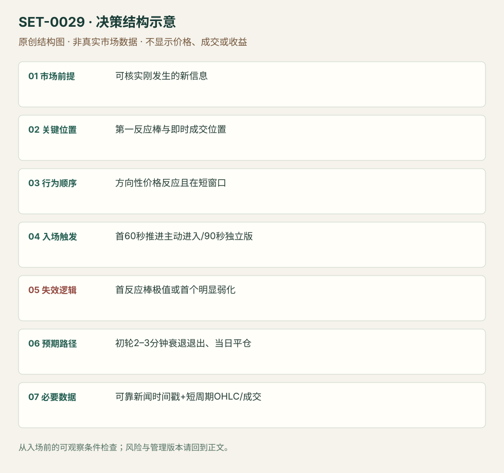

突发新闻的第一轮价格反应
Breaking News First Move · SET-0029 · reviewed · v1.0.0
盈利证据：not_established。审查范围与来源版本见第13节；未知字段保留缺失原因。
1. 名称与快速概览
真正的新消息刚到达、股票立即显示方向反应时，捕捉第一轮极短动量。新闻发布时间、收到时间和股价反应时间必须记录；已经延伸数分钟的追价不属主版。
记录口径：PA supporting；必要数据 OHLC、news_timestamp、volume。名称性质：编辑性描述名，英文保留来源术语以便检索。reviewed 只表示本条规则与证据记录审查通过，盈利状态为 not_established。
2. 本质与行为假说
价格对信息迅速重估可造成短时单向活动。不能因新闻标题看似利好便下单，必须看到反应；不接受原文“及时进就永远不会止损”的不可验证保证。
3. 适用市场与环境
来源偏盘中突发新闻。公告刚到、交易连续、价差与流动性允许快速执行；已停牌、谣言未核实、延时转载或价格已抢先反应时先处理可执行性。
来源实用市场：美国个股。
Session：美股/ES现金参考段 09:30–16:00 America/New_York；收盘前平仓。期货夜盘单独建背景，不将其并入开盘区间。
跨市场：本版不主张已经验证的跨市场迁移；更换市场必须重定数据来源、流动性与session。
4. 出现前的观察清单
锁定新闻原始时间与本地到达时间；分清股票消息和市场消息。预设第一反应棒、可接受追价、止损和滑点预算。源文也讨论期权溢价下降，股票与期权执行不得混统计。
5. 形成过程与状态转换
新信息到达 → 股价首轮反应 → 极短窗口入场 → 2–3分钟初推 → 首次衰弱减仓/退出。无反应为未成立；初推失败为正常规则失败。
6. Entry trigger 与执行方式
正文建议只在首分钟，清单允许最长1分30秒；本库保留严格≤60秒主版与≤90秒备选，不能混算。具体执行为源方向持续推进时主动成交；没有假设自己能抢到公告前价格。
7. Invalidation 与止损逻辑
首个反应棒低点为长方向硬边界（空向对称）；原文偏首个弱化即撤，往往比硬边界早。首棒太宽使风险无法承担就跳过，不能缩至随机价假装风险小。
8. Exit、target 与 trade management
预计初轮2–3分钟冲高，出现挣扎便逐步退出。该时长是来源经验描述，不是盈利承诺；新闻修订与反向强反应须立即重新判断。日内结束必须平。
9. 常见 variations
只改变消息类别不计新条；新闻后形成低量回调才进入归0015的事件版本。即时首推和0028第二日接受的等待阶段不同。
10. 失败方式与不交易条件
标题旧闻；到达延迟；没有实际方向反应；首棒太宽或跳价太多；期权点差吃掉空间；将最初一次正向打印当持续动量。
11. 与相近 setups 的区别
12. 图表与案例解读
已看第31页两张冲高图；能辨认突然量增和冲后衰弱。新闻标题、发布时间与实际订单未同屏，因此仅支持价格案例而不是反应延迟测量。
- [VIS-000031] 来源PDF第31页图表；定位：PDF页序 31。来源展示BIDU突发冲高与成交柱；绿色/橙色箭头是作者的进出提示，不含新闻终端原始时间。 验证：chart_viewed_pdf_page。
本地原创示意（VIS-000086，非真实市场数据）：

小屏阅读可打开原尺寸示意图并缩放。

此图用于对照识别顺序与风险定义；不计入真实案例覆盖率。
视觉材料元数据与查看范围
- VIS-000031 · real_source_chart / structure_and_trigger / chart_viewed_pdf_page
品种：BIDU；日期：未知/不适用；周期：5分钟/1分钟；时区：未知/不适用
日期未在画面中核对；时区未在画面中核对；作者示例；不是独立成交审计 - VIS-000086 · synthetic_structure_diagram / illustration_only / generated_not_market_evidence
品种：未知/不适用；日期：未知/不适用；周期：未知/不适用；时区：未知/不适用
无真实品种、日期或价格：这是结构示意
13. 证据、分歧与未知项
完整超短规则来自SAI单份playbook；SMB只佐证新信息/参与前提。90秒与首分钟的内部版本冲突已保留；未独立验证作者的“永不止损”断言。
- [EVD-000055] SAI Trades，《My Experience: Trading the Open Playbook》，SRC-0013；定位：PDF页序31 Breaking News - First Move。支持：须有刚发布消息及股价反应，第一分钟进入、清单上限90秒，首个反应棒低点为硬保护，2–3分钟冲高见弱减仓。
- [EVD-000056] SMB Capital，《The Big Dawg Consolidation Cheat Sheet》，SRC-0042；定位：Big Dawg Consolidation: fresh news / heavy relative volume。支持：独立SMB资料强调新消息与相对成交参与，但其后续旗形入场不是本条的第一分钟规则。
审查边界：来源份数与独立核心核验分开；当前类别为 independent_context_only。正文中的概念、官方事实、衍生解说或同族资料只按其支持范围使用。
14. 可用于复盘的检查表
- ☐ 下单前的前提可核对：可核实刚发生的新信息
- ☐ 事前标记位置：第一反应棒与即时成交位置
- ☐ 行为按顺序出现：方向性价格反应且在短窗口
- ☐ 实际触发符合选定版本：首60秒推进主动进入/90秒独立版
- ☐ 事先写明本次否定条件：首反应棒极值或首个明显弱化
- ☐ 目标/路径只用当时已知信息：初轮2–3分钟衰退退出、当日平仓
- ☐ 数据满足 可靠新闻时间戳+短周期OHLC/成交；记录时间、点差、滑点、队列和未成交
- ☐ 记录截止平仓及规则偏离；正常亏损不事后改成“未成立”
15. 后续验证问题
收到延迟如何分组？从第一反应起计时与新闻源时计时差别？股票和期权相同触发的成本后差异？
双向相关导航
- SET-0028 新消息后的第二日关键位接受 0029 捕捉刚发布后的第一分钟；本条在事件次日经过新的接受过程。
- SET-0031 事前预案中的宏观意外与跨市场确认 0031 有事前共识分支与多市场确认；本条处理突然到达的个股信息第一轮。
- SET-0015 缩量普通回撤后的成交恢复 新闻第一轮后的普通小回调是0015事件版本，不能重复计数。